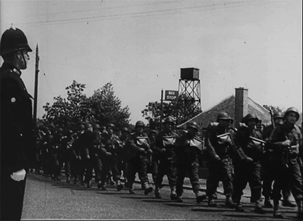

My Declamation Experience: War
Speech Topic: War
The topic of my speech along with 4 of my classmates is about war. War is something very tragic and inhumane in my opinion. Like in my speech I see it as the ultimate display of greed, because leaders thirst for land, power, and resources can lead to thousands of lives passing. All that precious lives for nothing but meaningless stuff in the end. It's really sad thinking that a child is forced to fend for themselves because their parents got caught in the casualties of war and now have to live a very hard life that they didn't want or asked for.
My Declamation Speech Experience
My experience on the declamation speech is always the same for my whole 10+ years of attending Golden Link College. While practicing for our performances for the event of course we had to memorize our self-made speeches. For me it didn't even take like 5+ times to read my speech to almost completely memorize it, I think it only took me 1 or 2 times of reading it and I already got it memorized. And a tedious part of memorizing a speech is having to incorporate hand gestures, im just to lazy to make those gestures so I opted for improvisation when it's time for me to finally deliver my speech infront of a big audience. And I never really liked big crowds of people and performing infront of big crowds of people so I was VERY VERY nervous so when the day finally came for our Declamation program almost every chance I get I tried to memorize it ontop of my head. I was continously repeating my speech to fully memorize it so when im finally infront of the audience and in the stage I won't blank out or even if I did I can still continue. And im happy that I was able to deliver my speech properly without forgetting anything and stuttering out of nervousness. And unfortunately I don't have any pictures or a short video of me delivering my speech. So instead heres a class photo of us in Declamation.